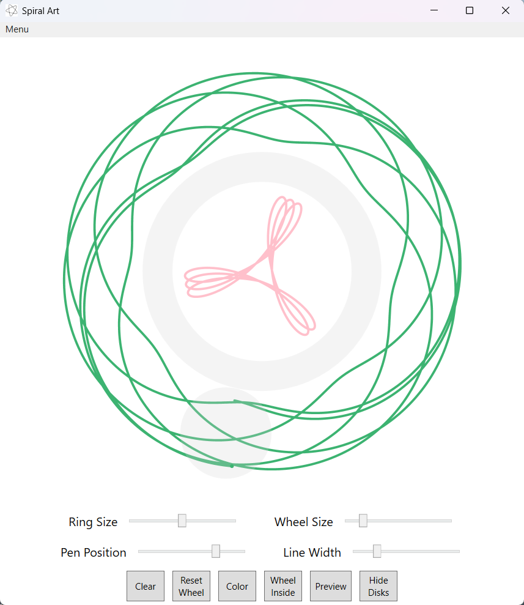

for Windows 10/11
Download Spiral ArtInstructions:
1. Download SpiralArt.zip from the first link above
2. Press the blue Download button
3. Press the Download anyway button
4. Open your downloads folder
5. Right-click SpiralArt.zip and select Extract All...
6. Press the Extract button
7. Open the SpiralArt folder, if Windows hasn't already done that
8. Right click on the SpiralArt folder
8a. Click on Show more options
8b. Click on Scan
8c. Wait for the scan to complete
9. Double click setup.exe
10. If it says "Windows protected your PC", do 10a and 10b
10a. Click More info
10b. Press Run anyway
11. Press the Install button
12. If it won't install, try uninstalling first, then repeat steps 9 through 11